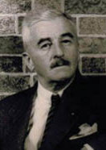

(1892 – 1967)

Amerikan modernist yazarların babası sayılan Faulkner, rakip gördüğü Ernest Hemingway'den farklı olarak uzun ve karmaşık anlatımları benimsemiştir. Uyguladığı teknikler arasında bilinç akışı tekniği ve çoklu anlatı teknikleri de bulunur. 1930'larda Avrupa'daki deneysel geleneği izleyen ilk Amerikan yazardır.
25 Eylül 1897'de Mississippi'de doğan Wiliam Faulkner (okunuşu: Vilyım Folknır), buradaki güney gelenekselliğinden oldukça etkilendiği bir çocukluk geçirdi. Sonraları hayatının büyük bir bölümünü geçirdiği Oxford'daki Lafayette kasabasına taşındılar. Eserlerinde bahsettiği "Jefferson" Oxford'u, "Yoknapatawpha Kasabası" ise Lafayette'i temsil eder. Büyük-büyükbabası William Clark Falkner Mississippi'nin önde gelen kişilerinden biridir: ABD iç savaşı sırasında Konfederasyon ordusunda görev yapmış, tren yolu yaptırmış ve adını Tippah kasabası yakınındaki Falkner şehrine verdirmiş bir askerdir. Aile soyadları "Falkner" olmasına rağmen büyük ihtimalle nüfus memurunun bir hatası sonucu "Faulkner" olmuştur.
Faulkner liseyi terk ettikten sonra bir işte tutunamadığı için çevresindekiler tarafından "wastrel" (ıskarta) olarak anılmaya başlanmıştır. 1918'de iki tarafın ailelerinin de William'ın ev geçindiremeyeceğine karar verip ayırdıkları nişanlısı Estella Oldham'ın zengin ve yaşlıca olan Cornell Franklin'le evlenip Çin'e yerleşmesiyle yazar büyük bir üzüntü yaşamış ve Yale öğrencisi olan Oxford'dan arkadaşı Phil Stone'un yanına, New Haven'a taşınmıştır. Burada katiplik yapmış, Phil Stone'un onun için hazırladığı okuma programıyla klasikleri ve çağdaş yazarları okumuş; bu sayede Melville, Cervantes, Dostoyevski ve Conrad'ın eserlerine büyük hayranlık duymaya başlamıştır.
Daha sonra Toronto'da yardımcı pilotluk yapıp Oxford'a geri dönen yazar, bu sefer Mississippi Üniversitesi'ne girmiş, burada "Marionettes" adlı bir grup kurup aynı adı taşıyan bir oyun yazmaya çalışmış fakat başaramayınca 1921'de okulu bırakıp New York'a gitmiştir. Burada bir kitapçıda çalışmış ve ileride Sheerwood Anderson'ın eşi olacak olan Elizabeth Prall'la tanışıp arkadaşlık kurmuştur. Aynı yılın aralık ayında Oxford'a geri dönmüş ve bu sefer de üniversitede postane müdürü olarak çalışmaya başlamıştır. 1924'te The Marble Faun (Mermer Tanrıça) adlı şiir kitabını basmıştır.
1925'te New Orleans'a gidip arkadaşı olan Elizabeth Prall sayesinde Sherwood Anderson'ın "çırağı" olmuş ve onun yönlendirmeleriyle I. Dünya Savaşı sonunda entelektüellerde ve toplumda görülen sıkıntı ve büyük üzüntüyü benimseyip yine Anderson'ın yönlendirmesiyle 1926'da Soldier's Pay'i yazmıştır.
1929'a kadarki yazılarında şeytani özellikler taşıyan karanlık kötü kadın karakterler görülürken 1928'de ayrıldığı nişanlısı Estella'nın boşanıp dönmesi ve William Faulkner'ın onunla evlenmesiyle bu kadın modeli değişmiştir. 1929'da Sartoris'i yazmıştır. Bu eserinin önemli özelliği, Faulkner'ın ünlü "Yoknapatawpha Kasabası" sembolünü ilk kullandığı kitabı olmasıdır. Aynı yıl, ünlü eseri Ses ve Öfke'yi yazmış ve büyük bir başarı kazanmıştır. 1930'da yazdığı Döşeğimde Ölürken'de 65 kilometre ötedeki Jefferson'a gömülmek istediğini söyleyen Addie Bundren'in cenazesinin ailesi tarafından buraya götürülmesi anlatılır.
Yazar, devam eden maddi sıkıntıları yüzünden ara ara Hollywood'da senaryo yazarlığı yapmıştır. 1932'de ise Ağustos Işığı'nı yazmıştır. Bu eserde Lena Grave, Joe Christmas ve Peder Hightower'ın geçmişe saplantılı hikâyeleri birçok anlatıcı kullanılarak aktarılır. 1936'da ise Faulkner en bilinen romanlarından 'Absalom! Absalom!'u yazmıştır.
1949 yılında Nobel Edebiyat Ödülü'nü kazandıktan sonra, 1955'te Pulitzer Ödülü'nü alan Faulkner, 6 Temmuz 1962'de kalp krizi sonucu Mississippi'de ölmüştür.
Seçme Romanları: Sartoris (1929), The Sound and the Fury (1929 – Ses ve Öfke, Remzi Kitabevi, 1965), As I Lay Dying (1930 – Döşeğimde Ölürken, De Yayınları, 1965), Red Leaves (1930 – Kırmızı Yapraklar, Ataç Kitabevi, 1959), Dr. Martino (1931 – Doktor Martino, Yenilik Yayınları, 1956), That Evening Sun (1931 – O Akşam Güneşi, YKY, 1993), Light in August (1932 – Ağustos Işığı, Cem Yayınevi, 1968), Absalom, Absalom! (1936 – Abşalom, Abşalom!, YKY, 2000), Go Down, Moses (1942 – Kurtar Halkımı Musa, YKY, 2002), Knight's Gambit (1949 – Duman, Varlık Yayınları, 1952)